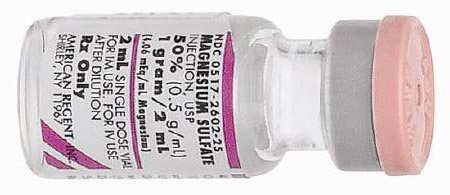

VENTRICULAR FIBRILLATION
PULSE-LESS VENTRICULAR TACHYCARDIA
Ventricular Fibrillation Fine Type
Ventricular Fibrillation Coarse Type

Ventricular Tachycardia Monomorphic , pulseless

Ventricular Tachycarida Polymorphic , pulseless
Remember, we shock V-FIB. Memorize that, write it on your car window: V-FIB MEANS SHOCK!
It this was an unwitnessed arrest, meaning it did not happen in front of you, you should give him 5 cycles of CPR before shocking him.
Remember this: Unwitnessed arrest means CPR before shock.
But if this was a witnessed arrest (such as a hospital code) and you see Ventricular Fibrillation on the monitor, SHOCK FIRST!
- Ok we found our guy unresponsive, and you gave him 5 cycles of CPR. Just as a reminder, 1 cycle of CPR means 30 chest compressions followed by 2 breaths. So we give him five cycles of that. Start with the compressions and then open the airway with a head tilt chin lift and give the 2 breaths. Each breath is 5-6 seconds.
- While you are doing that, the rest of the team hooks up the monitor, starts an IV line, and puts an oxygen mask on the patient and sends off blood to the lab. Remember , each chest compression takes the chest down around 2-2.4 inches. Remember, any pauses during CPR should be less than 10 seconds. Use one of these pauses to insert the Endotracheal tube.
-
Based on 2016 guidelines, Epinephrine 1
mg must be given as early as possible
during the code.
-
Shock Time ! Talk aloud. Now this is one
occasion in your life where no one will
fault you for talking aloud.
- Turn ON CHARGE button the Defibrillator. Talk aloud "Charging, 200 Joules ".
- Make sure SYNC IS OFF.
- When the machine tells you "ready to deliver shock": Clear everyone at this point. "I am clear, You are Clear, Everyone Clear".
- Press the SHOCK button "Shocking now, 200 Joules".
Quick reminder here: If you are using a monophasic debrilllator, all shocks are at 360 joules. Biphasic debrillators have device specific guidelines, however, there may not be time to figure that out during a code, so if it is a Biphasic debrillator, all shocks are at 200 Joules, or you could start at 120-200 J and escalate to 200, 300, 360. Biphasic means that the electrical current travels in both directions, ie it travels from one paddle to the other paddle in one direction, and then it flows back to the first paddle in the opposite direction. Biphasic needs less energy, and less chances of burns, and less damage to the heart.
-
And what is the first thing you do/say after shocking your patient? DO NOT CHECK HIS PULSE!! Don't don't don't check his pulse. You will have time later for such niceties. As team leader the first thing you say after the shock is "Resume CPR please". And then you keep going for another 5 cycles of CPR, one cycle means 30 chest compressions and 2 breaths. As soon as you resume CPR, have a team member give him 1mg of Epinephrine during the CPR.
Epinephrine 1mg (10 ml of 1:10,000)
- Resume CPR, and give Epinephrine while CPR is going on (You are giving Epinephrine between the first and the second shocks, during CPR)
- Do a rhythm check after each cycle of CPR.
- Still in V-Fib? "SHOCK at 200 Joules".
- Resume CPR, and give Epinephrine while CPR is going on (You are giving Epinephrine between the second and the third shocks, during CPR)
- Still in V-Fib? "SHOCK at 200 Joules".
-
Resume CPR. At this point you should
give Amiodarone 300mg IV diluted in 20ml
D5W IV SLOW PUSH, (You are giving Amiodarone between
the third and fourth shocks) while CPR continues. Amiodarone is
diluted in 20 ml of D5W before
administration. It is not available
ready-made. Do not let this delay the
next shock. Keep in mind the
contraindications for using Amiodarone :
2nd or 3rd degree AV block. Most common
side effects are hypotension and
bradycardia.

- SHOCK again, resume CPR
- You can repeat another dose of Amiodarone, this time 150mg. (between fourth and fifth shocks) But no more Amiodarone after that.
- Epinephrine can be repeated every 3 minutes for as many times as you want!
- If Amiodarone is successful, this is the maintenance dose: 1mg/hr for 6 hours followed by 0.5mg/hr for upto 72 hours. Inline filter should be used, and a glass bottle should be used for administrations for over 2 hours. Maximum cumulative dose that can be given in a 24 h period is 2.2 gm. When it is time to transition from IV to oral Amiodarone, the starting dose is 200mg po q6-8h for one week followed by 200 mg po q12 for one week followed by 200 mg po qd.
- Let us say, after a shock he reverts to sinus rhythm. DO NOT STOP AND CHECK HIS PULSE. Continue CPR for 2 minutes and only then check his pulse to make sure that he is not in PEA (pulseless electrical activity)
- If the VFib is refractory to Amiodarone and Epinephrine: Consider Lidocaine at a dose of 1mg/kg IV OR 2mg/kg in 10 mg of Normal Saline through the Endotracheal Tube. If effective, follow up with 1-4mg/minute infusion.
- If Torsades de Pointes : Magnesium Sulphate 2gm of 50% solution, dilute in 10ml of D5W, give as IV push. 
The key points to remember in the management of VFIB / PULSELESS VENTRICULAR TACHYCARDIA ARE
- If found unresponsive, give CPR before shocking
- If it is a witnessed arrest shock first, then CPR
- Give Epinephrine as early as possible, between the first and second shocks.
- Again give Epinephrine as early as possible, between the second and third shocks.
- When Epinephrine fails, move on to Amiodarone 300mg , between third and fourth shocks.
- If the debrillator is monophasic, give 360 joules. If it is BiPhasic give 200 Joules.
- Don't do a pulse check right after a shock. Give 5 cycles of CPR right after a shock
- Give the next dose of Amiodarone 150 mg between fourth and fifth shocks.
- Do not delay shocks just because the medications are not ready. The shocks are the most important component of VFib management, not the medications.
- As you have noticed, the medications are administered while CPR is going on.
- After 5 cycles of CPR, do a RHYTHM CHECK, and then SHOCK if it is a shockable rhythm. Do not delay shocks to give Epinephrine or Amiodarone. These are given during CPR, meds are not given their own 'time slot'.
- After each SHOCK, start CPR immediately.
- Once you get a perfusing rhythm, continue CPR for 2 minutes and then check pulse.
If Quantitative Waveform Capnography CO2 Monitoring is available, the objective during chest compressions is to keep the number above 10. Once Return of Spontaneous Circulation ROSC occurs, the number will rise above 35.
Just a quick review of the pharmacology involved in management of Ventricular Fibrillation: Amiodarone is class III medication, it is a potassium channel blocker, and it prolongs re-polarization. It has powerful antiarrhythmic effects. The half life is 40 days. It works on the sodium and potassium channels. Watch out for vasodilation and the blood pressure problems it could cause, as well as bradycardia. The fact that it is not available in pre-filled syringes necessitates diluting it in 30 mg D5W before administration. It can cause QT prolongation. Do not use if patient is in Torsades de Pointes AND has prolonged baseline QTc.
Lidocaine is class 1b medication, just like Disopyramide and Procainamide. It works by prolonging the action potential. It is available in pre-filled syringes.
Epinephrine increases heart rate, contractility and conduction velocity. It causes vasoconstriction. Excessive amounts can cause myocardial ischemia. Endotracheal dose is 2mg in 10 ml of Normal Saline. 10 ml of 1:10000 is what is given in one dose.
A quick reminder here: every order given during a code has to be specifically directed to an individual, and not generally at the group standing around. And the person following the order must acknowledge this by giving the medication and then verbally confirming, "One milligram Epinephrine given IV".
And here is an exam tidbit: drugs that you can use thru the Endotracheal Tube: Narcan, Epinephrine, Lidocaine, Vasopressin.


Read Other Page
Read All Page
Ventricular Fibrillation
It this was an unwitnessed arrest, meaning it did not happen in front of you, you should give him 5 cycles of CPR...
Read More
Infant Cpr
Perform 30 chest compressions. Use two fingers and deliver the compressions over the breastbone, just below the nipple line...
Read More
Cpr General Principles
CPR sequence is Compressions- Airway - Breathing. The only exception is drowning victims where the sequence is...
Read More